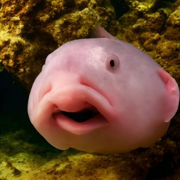
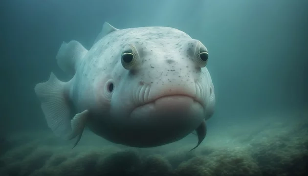
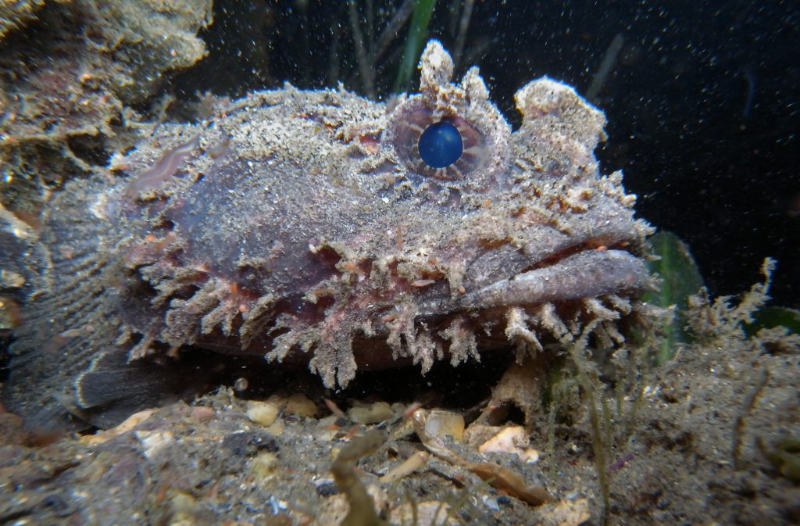
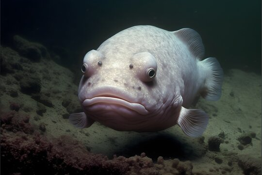

Peter le ronfleur,
Notre plus ancien blobfish agé de 55 ans et pourtant qu'a la moitié
de sa vie.
Attention tout de même il est un peu grincheux mais pourtant adorable
vu qu'il se laisse caressé.
Daphnée

La fée Daphnée,
Du haut de ces 42 ans, Daphnée est notre seule femelle. Les blobfish
femelle sont réputées pour avoir une plus longue espérance de vie que
les mâles cependant elles nécessitent plus de ressources
Concernant notre Daphnée, plus vous la regarder dans les yeux, plus elle va se refermer, elle reste assez timide quand même
Ludo

Ludo le beau,
Faisant notre plus grande fierté et du haut de ces 16 ans, ludo est le
plus rapide, le plus fort.
Rien n'a ajouter sur notre plus beau spécimen si ce n'est qu'il attend
avec impatience l'heure du dîner comme à son habitude.
Bernard

Bernard notre césar,
Retrouvé au milieu de nulle part au fin fond du Pacifique, notre césar
est très précieux et ainsi le plus onéreux.
Appartenant à la lignée royale des blobfishs, bernard souhaite que vous vous tenez toujours plus bas que lui, sinon il fonce sur la vitre jusqu'à la briser.
Titouan

Titouan l'enfant,
Enfin notre plus jeune blobfish, après 5 ans passé dans le Pacifique,
vous vous en doutez titouan est le plus casse-pied
Il est aussi capable de créer des tourbillons dans son aquarium son l'excitation à regarder daphnée sa voisine.
Vidéo satisfaisante
Prenez le temp d'admirer nos beaux spécimens dans leur milieu de vie